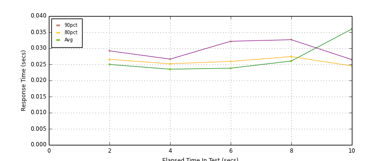
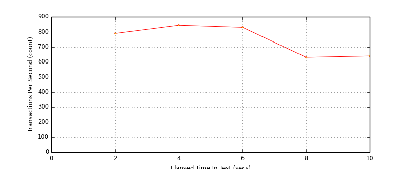
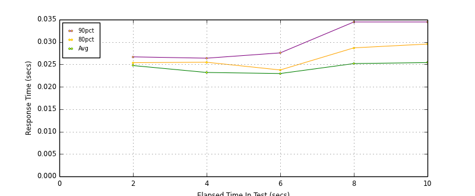
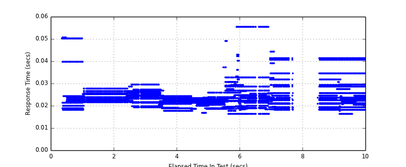
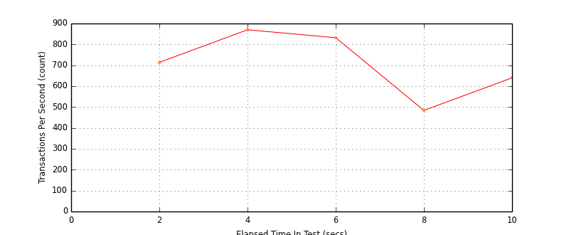
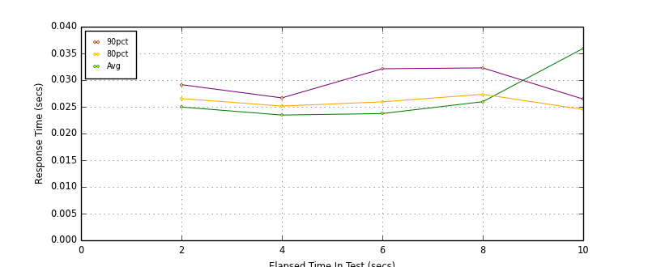
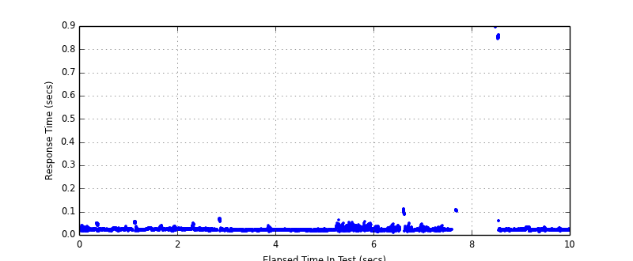

Performance Results Report
Summary
transactions: 7499
errors: 0
run time: 10 secs
rampup: 0 secs
test start: 2014-10-11 23:59:11
test finish: 2014-10-11 23:59:21
time-series interval: 2 secs
workload configuration:
| group name | threads | script name |
|---|
| user_group-1 | 2 | v_user_mix.py |
| user_group-2 | 2 | v_user_mix.py |
| user_group-3 | 2 | v_user_mix.py |
| user_group-4 | 2 | v_user_mix.py |
| user_group-5 | 2 | v_user_mix.py |
| user_group-6 | 2 | v_user_mix.py |
| user_group-7 | 2 | v_user_mix.py |
| user_group-8 | 2 | v_user_mix.py |
| user_group-9 | 2 | v_user_mix.py |
| user_group-10 | 2 | v_user_mix.py |
All Transactions
Transaction Response Summary (secs)
| count | min | avg | 80pct | 90pct | 95pct | max | stdev |
|---|
| 7499 | 0.012 | 0.026 | 0.026 | 0.029 | 0.034 | 0.898 | 0.044 |
Interval Details (secs)
| interval | count | rate | min | avg | 80pct | 90pct | 95pct | max | stdev |
|---|
| 1 | 1581 | 790.50 | 0.016 | 0.025 | 0.027 | 0.029 | 0.033 | 0.059 | 0.006 |
| 2 | 1691 | 845.50 | 0.013 | 0.024 | 0.025 | 0.027 | 0.028 | 0.071 | 0.006 |
| 3 | 1663 | 831.50 | 0.015 | 0.024 | 0.026 | 0.032 | 0.037 | 0.066 | 0.006 |
| 4 | 1263 | 631.50 | 0.012 | 0.026 | 0.027 | 0.033 | 0.037 | 0.112 | 0.014 |
| 5 | 1281 | 640.50 | 0.013 | 0.036 | 0.025 | 0.026 | 0.030 | 0.898 | 0.104 |
Graphs
Response Time: 2 sec time-series

Response Time: raw data (all points)
Throughput: 5 sec time-series

Custom Timer: response_time_insert
Timer Summary (secs)
| count | min | avg | 80pct | 90pct | 95pct | max | stdev |
|---|
| 7082 | 0.016 | 0.024 | 0.026 | 0.029 | 0.034 | 0.055 | 0.006 |
Interval Details (secs)
| interval | count | rate | min | avg | 80pct | 90pct | 95pct | max | stdev |
|---|
| 1 | 1428 | 714.00 | 0.018 | 0.025 | 0.025 | 0.027 | 0.040 | 0.051 | 0.006 |
| 2 | 1740 | 870.00 | 0.018 | 0.023 | 0.025 | 0.026 | 0.027 | 0.030 | 0.002 |
| 3 | 1664 | 832.00 | 0.016 | 0.023 | 0.024 | 0.028 | 0.031 | 0.055 | 0.005 |
| 4 | 969 | 484.50 | 0.016 | 0.025 | 0.029 | 0.034 | 0.041 | 0.055 | 0.008 |
| 5 | 1281 | 640.50 | 0.016 | 0.025 | 0.030 | 0.034 | 0.041 | 0.041 | 0.007 |
Graphs
Response Time: 2 sec time-series

Response Time: raw data (all points)

Throughput: 2 sec time-series

Custom Timer: response_time_query
Timer Summary (secs)
| count | min | avg | 80pct | 90pct | 95pct | max | stdev |
|---|
| 7479 | 0.012 | 0.026 | 0.026 | 0.029 | 0.034 | 0.898 | 0.044 |
Interval Details (secs)
| interval | count | rate | min | avg | 80pct | 90pct | 95pct | max | stdev |
|---|
| 1 | 1581 | 790.50 | 0.016 | 0.025 | 0.027 | 0.029 | 0.033 | 0.059 | 0.006 |
| 2 | 1691 | 845.50 | 0.013 | 0.023 | 0.025 | 0.027 | 0.028 | 0.071 | 0.006 |
| 3 | 1663 | 831.50 | 0.015 | 0.024 | 0.026 | 0.032 | 0.036 | 0.066 | 0.006 |
| 4 | 1263 | 631.50 | 0.012 | 0.026 | 0.027 | 0.032 | 0.037 | 0.112 | 0.014 |
| 5 | 1281 | 640.50 | 0.013 | 0.036 | 0.025 | 0.026 | 0.030 | 0.898 | 0.104 |
Graphs
Response Time: 2 sec time-series

Response Time: raw data (all points)

Throughput: 2 sec time-series